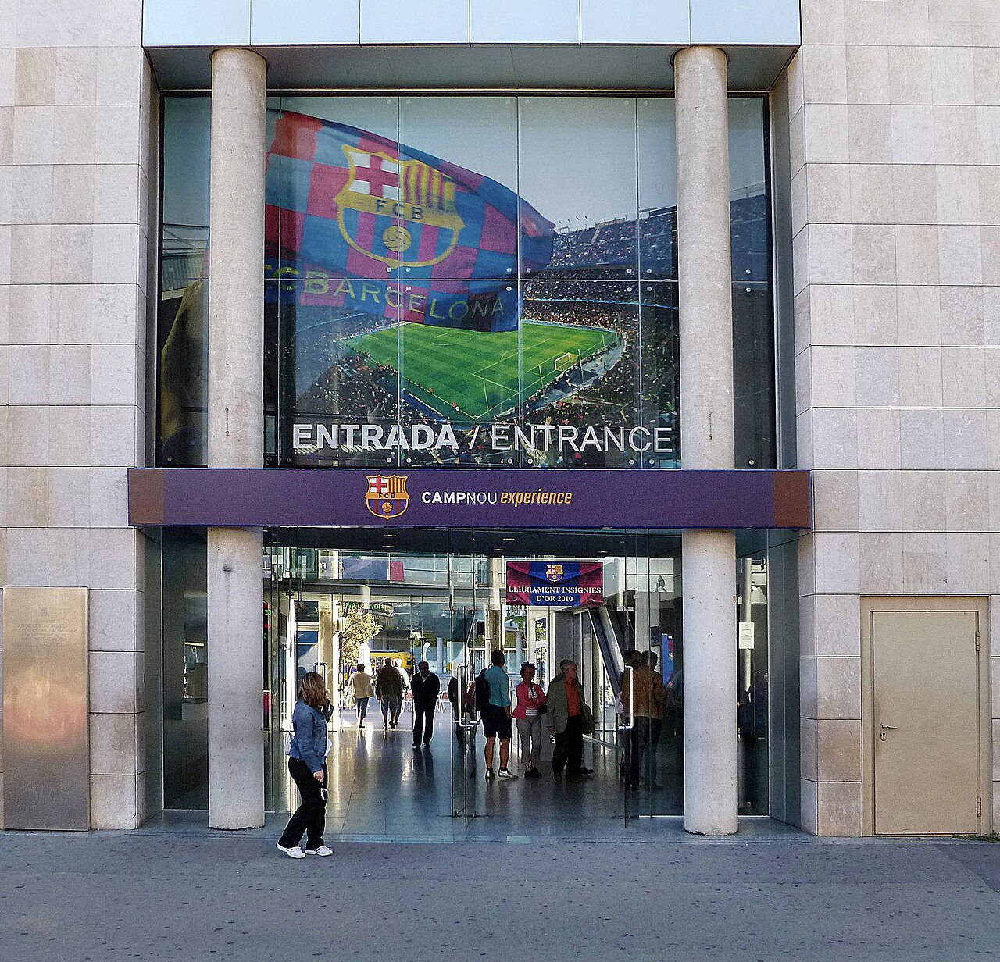
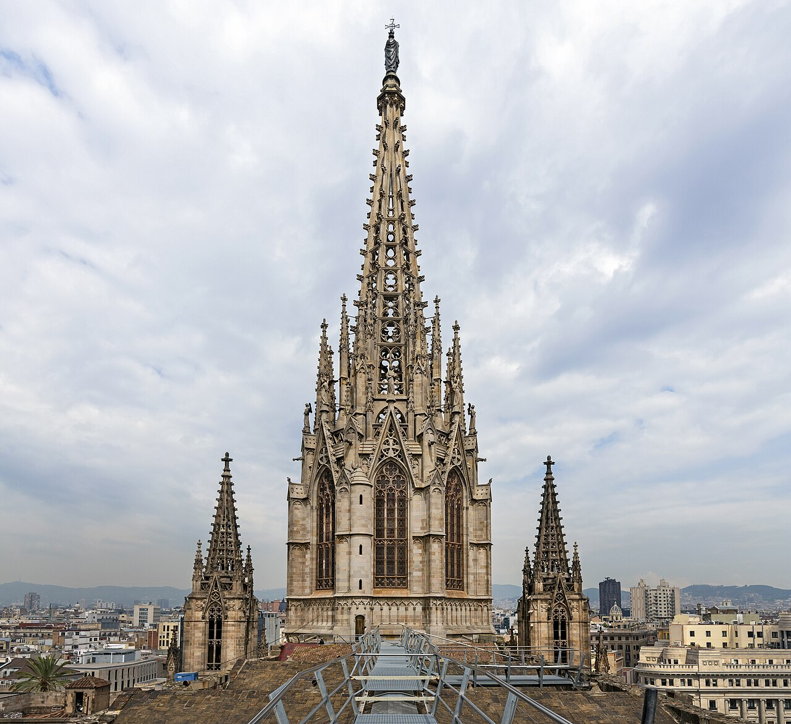
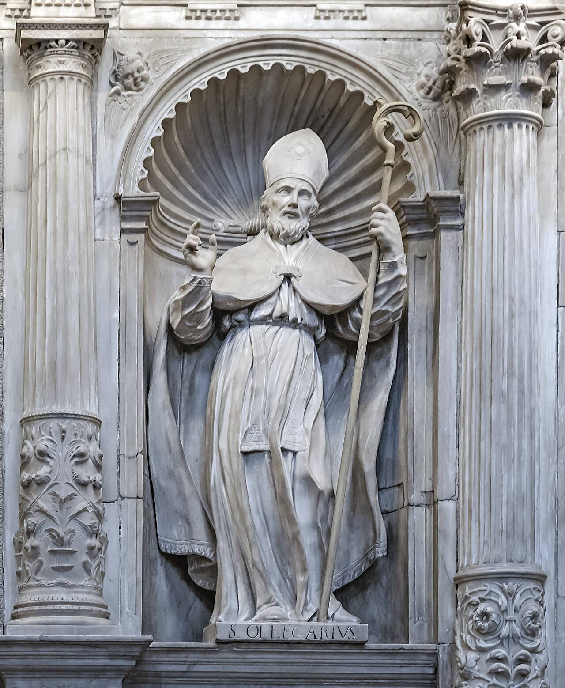
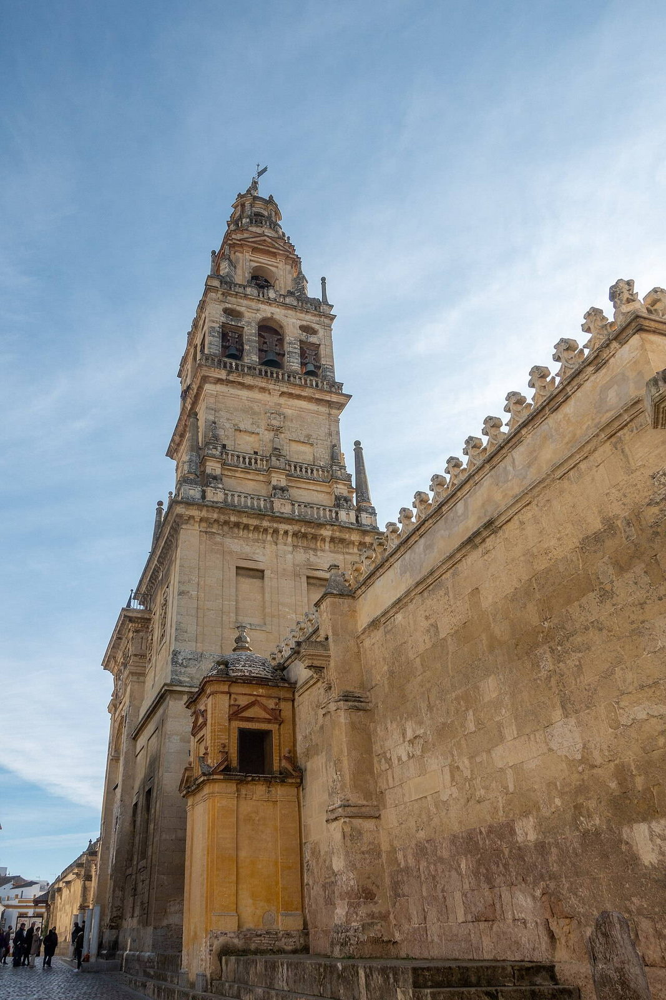
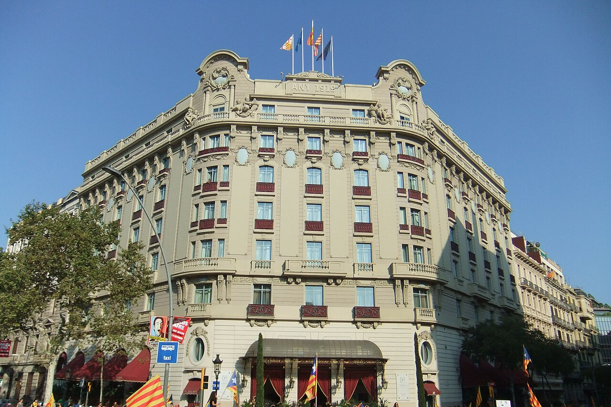
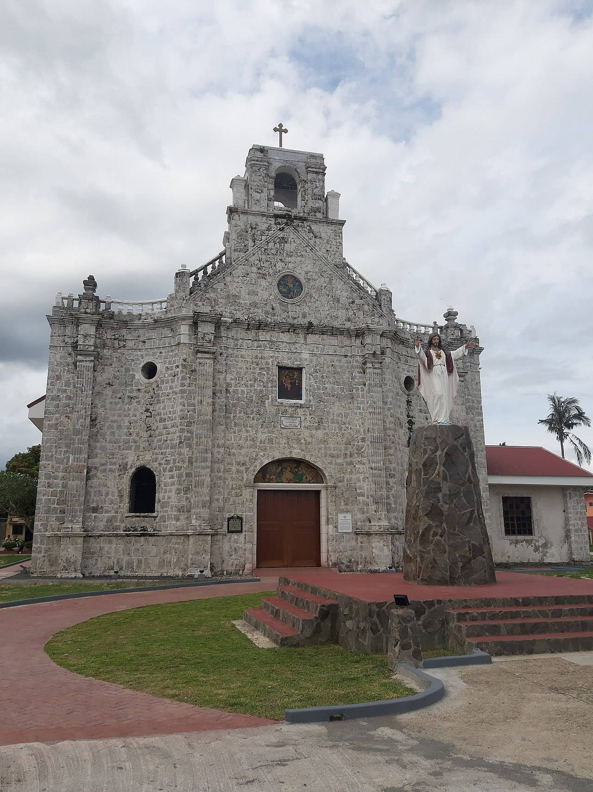

Исторические и справочные гербы


Barcelona
Путеводитель. Объектов в этом выпуске: 39.
OTIUM — практика нарочитого досуга. В античном смысле otium — не побег от работы, а время, когда внимание возвращается к памяти, пейзажу и мысли — без прикладного дедлайна.
Мы выстраиваем маршруты для неспешного присутствия, а не для чек-листа достопримечательностей: важно быть в месте, а не «потреблять» виды.
OTIUM — не туроператор. Это приглашение пройтись, остановиться и оставить маршрут незавершённым, если свет на фасаде заслуживает ещё минуты.
Исторические и справочные гербы
Путеводитель. Объектов в этом выпуске: 39.
Барселона — столица Каталонии и второй по величине город Испании, порт и средиземноморский культурный центр.
Римская колония, средневековый порт, промышленная эпоха и каталонский модерн (включая творчество Гауди) определили облик города. Барселона известна планировкой Эшампле, набережной и музейной сценой.
Индустриальная эпоха и экспозиция 1929 года заложили развитие Монжуика; Олимпиада 1992 года обновила набережную и инфраструктуру. Сегодня Барселона сочетает автономию Каталонии, туризм и креативные индустрии, оставаясь средиземноморским мостом Европы и Испании.
Arc de Triomf

Brick Mudejar-inspired arch built as the 1888 fair main gate—now a promenade to the Ciutadella.
Architect Josep Vilaseca i Casanovas used neo-Moorish brick patterning.
Skaters, buskers, and cyclists thread beneath daily.
Barcelona 274.JPG

Catedral de la Santa Creu i Santa Eulàlia

Neo-Gothic main front above a 13th–15th-century Gothic nave with geese in the cloister.
Dedicated to Saint Eulàlia; façade completion belongs to the 19th century.
Liturgical heart of the old city beside narrow lanes.
Barcelona Cathedral - Roof of Cathedral.jpg

Barcelona Cathedral Interior - Saint Olegarius.jpg

Platja de la Barceloneta

Sandy city beach beside a grid of low fishermen's blocks turned nightlife strip.
18th-century planned neighbourhood; Olympic-era promenade upgrades reshaped dunes.
Swim, run, or watch winter waves without leaving the city core.
Basílica de la Mercè

Базилика Ла Мерсе была построена в середине XIX века по проекту архитектора Франческо де Паула Вила в стиле эклектики, сочетающей элементы классицизма и барокко. Храм был освящён в честь святой Марии Магдалины и является одной из главных достопримечательностей Барселоны благодаря своей необычной архитектуре и богатой истории. Среди запоминающихся фактов стоит отметить, что базилика служила местом проведения народных праздников и фестивалей, а также была центром религиозной жизни города.
Базилика Ла Мерсе привлекает туристов и местных жителей своими архитектурными особенностями и значимостью в культурной и религиозной жизни Барселоны.
Santa Maria del Pi

Базилика Святой Марии де Пилар была построена в середине XVII века по проекту архитектора Франческо Бланко и завершена архитектором Хосе Матео Вилаграндо. Сооружение стало символом борьбы горожан Барселоны против османского нашествия и символизирует победу католицизма над исламом. Базилика известна своими яркими фасадами и сложной структурой внутреннего пространства.
Базилика привлекает туристов уникальной архитектурой и атмосферой старинной испанской церкви.
Basílica de la Sagrada Família

Antoni Gaudí's unfinished basilica—forest-like columns, nativity façade stone, and cranes that signal ongoing work.
Construction began in 1882; Gaudí directed the project from 1883 until his death in 1926.
UNESCO site and the city's most recognisable silhouette; towers slowly reach completion.
Turó de la Rovira

Бункеры де Кармел — комплекс оборонительных сооружений времен Гражданской войны в Испании, построенный республиканцами в 1937 году. Комплекс состоит из нескольких подземных укрытий и наблюдательных пунктов, расположенных на холме Монте-де-ла-Кармен. Бункеры использовались для защиты Барселоны от атак франкистов и сыграли важную роль в обороне города.
Это уникальный исторический объект, позволяющий увидеть военную архитектуру эпохи гражданской войны и насладиться панорамным видом на город.
Spotify Camp Nou

FC Barcelona's immense stadium—facade tours and museum exhibits even on non-match days.
Opened 1957; redevelopment plans cycle with club finance headlines.
Mecca for football culture; expect emotional crowds.
Casa Amatller

Кондитерская Casa Amatller была основана в Барселоне в конце XIX века семьей Аматллер. В 1905 году здание кондитерской было реконструировано архитектором Луисом Доменек-и-Мунтанером в стиле модерн, став одним из ярких примеров каталонского арт-нуво. Здесь знаменитые торты и пирожные стали настоящей визитной карточкой города.
Здание привлекает туристов своей уникальной архитектурой и историей, связанной с традициями испанской выпечки.
Casa Batlló

Dragon-scale roof, bone-like columns, and shimmering blue tiles—Gaudí's remodel of a bourgeois house.
1904–1906 renovation for the Batlló family on the Block of Discord.
Interior volumes and light wells reward an audioguide visit.
Casa Milà / La Pedrera

Stone quarry wave façade, attic catenary arches, and warrior chimneys on the roof.
1906–1912 apartment block for the Milà family; UNESCO-listed with other Gaudí works.
Rooftop sculpture garden defines city postcards.
Monument a Colom

Iron column pointing seaward—1888 exposition memorial to Columbus, elevator optional.
Marks Barcelona's maritime prestige and World's Fair ambition.
Pivot between Rambla crowds, Drassanes, and the port.
CosmoCaixa

КосмоКейс — крупнейший научный центр Барселоны, открытый в 2003 году, созданный на основе бывшего ботанического сада. Центр сочетает интерактивные экспозиции, научные выставки и образовательные программы, направленные на популяризацию науки среди широкой аудитории.
Один из ведущих научных музеев Европы, где посетители погружаются в мир природы и технологий через увлекательные интерактивные экспонаты.
Hospital de la Santa Creu i Sant Pau

Domènech i Montaner's modernist hospital pavilions—tile domes, gardens, and stained corridors.
Early 20th-century expansion of medieval charity healthcare; restoration opened tourism routes.
UNESCO ensemble rival to the more famous Gaudí trail.
Hotel Vela

Отель Hotel W Barcelona открылся в 2018 году после масштабной реконструкции исторического здания XIX века. Здание было частью комплекса El Born, известного своими живописными улочками и архитектурой модерна.
Отель привлекает внимание туристов своей современной архитектурой и уникальным интерьером, сочетающим элементы хай-тек и арт-деко.
Mercat de Sant Josep de la Boqueria

Iron-and-glass market hall packed with fruit stacks, jamón legs, and juice counters.
Present structure from the 19th century atop older trading grounds.
Sensory overload best early before tour groups pack the aisles.
Llagrimes negres.JPG

Llotja de Barcelona

Лонха-де-ла-Мар (La Llotja de la Mar) — историческое здание Барселоны, построенное в готическом стиле в конце XIV века. Изначально предназначалось для торговли рыбой и морепродуктами, позже стало использоваться как биржа и место проведения аукционов. Здание знаменито своей архитектурой и декоративными элементами, включая богато украшенные фасады и внутренние помещения.
Здание Лонха-де-ла-Мар является выдающимся образцом средневекового готического стиля и символом экономической мощи Барселоны в Средние века.
Font màgica de Montjuïc

Huge ornamental fountain with music-and-light shows in front of palatial fairground steps.
Built for the 1929 International Exposition; evening choreography restored for tourism.
Free spectacle—check seasonal timetables.
Monestir de Pedralbes

Монастырь Педрале́бс был основан в XIII веке королевой Марией де Монфор, супругой короля Хайме II Арагонского. Со временем монастырь стал важным культурным центром и местом паломничества, известным своими великолепными садами и архитектурой готического стиля. Здесь сохранилась уникальная коллекция средневекового искусства и архитектуры, представляющая интерес для исследователей и туристов.
Монастырь привлекает внимание посетителей благодаря своей богатой истории, уникальной архитектуре и живописной природной среде, сочетающей элементы средиземноморской растительности и элегантную планировку садов.
Castell de Montjuïc

Крепость Монжуик была построена в конце XIX века в рамках подготовки Барселоны к Всемирной выставке 1888 года. Она расположена на одноимённом холме и использовалась как оборонительное сооружение во времена испанской монархии. Сегодня крепость служит символом города и популярной смотровой площадкой.
Монжуикская крепость интересна своей архитектурой и панорамным видом на город.
Mosque–Cathedral of Córdoba (52002818971).jpg

Palau Nacional

Музей основан в 1897 году как музей Барселонского университета, позже стал Национальным музеем искусства Каталонии. Коллекция музея включает произведения каталонского искусства от Средневековья до начала XX века, среди которых работы Пикассо, Гауди и Миро.
Это один из важнейших музеев Испании, демонстрирующий богатое культурное наследие Каталонии.
Palau de la Música Catalana

Lluís Domènech i Montaner's flower-packed concert hall—stained glass, mosaics, and allegorical sculpture.
Built 1905–1908 for the Orfeó Català choral society.
UNESCO monument; guided tours when concerts pause.
Palau Güell

Early Gaudí urban palace with dark façade and explosive rooftop chimneys overlooking the Raval.
Built 1886–1890 for industrialist Eusebi Güell; UNESCO-listed.
Central hall and attic catenary lines foreshadow later masterworks.
Parc de la Ciutadella

Former fortress grounds with boating lake, palm alleys, zoo corner, and ornate cascade monument.
Park opened after the 1888 fair; parliament building sits in the old arsenal.
Lazy picnics and street music on weekends.
Parc del Laberint

Парque del Llar dels Horts (современное название Parc del Laberint d'Horta) заложили в конце XIX века в Барселоне как ботанический сад и место отдыха горожан. Сад был спроектирован архитектором Жузепом Мария Феррером и оформлен ландшафтным дизайнером Рамоном Гомесом. Здесь впервые в Испании появились экзотические растения, привезённые из разных уголков мира.
Это одно из старейших парков Барселоны, известное своим уникальным лабиринтом из живых растений, который впечатляет туристов и местных жителей своей красотой и загадочностью.
Parc Güell

Gaudí-planned garden city fragment with mosaic lizard, hypostyle hall, and serpentine benches over Barcelona.
Eusebi Güell's early-1900s estate park opened to public use after housing failed to sell.
Panoramic viewpoint and introduction to trencadís tilework.
Museu Picasso

Музей Пикассо в Барселоне основан в 1963 году благодаря наследию семьи художника Пабло Пикассо и поддержке правительства Испании. Коллекция музея включает около трех тысяч произведений искусства, созданных художником в разные периоды жизни, начиная с ранних работ подростка до поздних шедевров зрелого мастера.
Посещение Музея Пикассо позволяет познакомиться с творчеством одного из величайших художников XX века и глубже понять культурное наследие каталонского региона.
Plaça de Catalunya

Large square sewing Eixample grid to the old city's mouth—pigeons, fountains, department stores.
Laid out in urban expansion plans; metro interchange beneath.
Default meeting point for metro, airport buses, and protests alike.
Port Vell

Maremagnum bridges, yacht moorings, and boardwalks between city and sea.
Olympic-era redesign turned industrial docks into leisure quays.
Evening strolls with gull noise and cable-car views to Montjuïc.
Ritz Barcelona 1.JPG

Santa Maria del Mar

Single-nave Catalan Gothic basilica built by medieval shipwright guild stone-by-stone.
Consecrated in the 1300s; clean proportions emphasize height over clutter.
Filming favourite for vaulted silence minutes from craft boutiques.
Simbahan ng Barcelona.jpg

Temple Expiatori del Sagrat Cor

Neo-Gothic church and statue crowning an amusement park ridgeline over the city.
Early 20th-century temple completion after decades of fundraising.
Funicular and vintage tram links make the ascent part of the fun.
Torre Glòries

Bullet-shaped high-rise by Jean Nouvel—night LED skin and water features at its base.
Opened 2005 as Torre Agbar; rebranded; tech and hotel uses shifted over time.
Anchor of the Glòries district renewal beside Design Museum and Encants market.